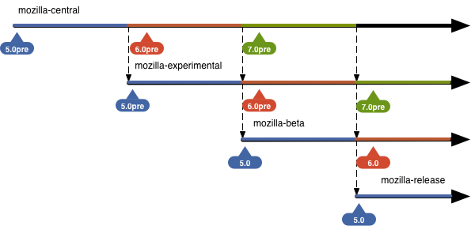
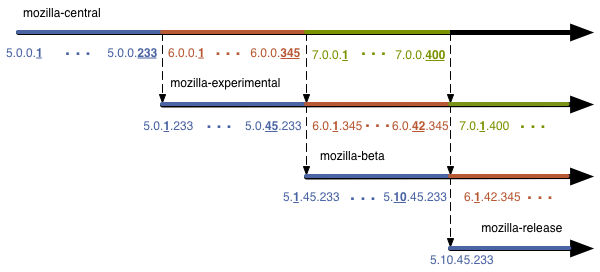
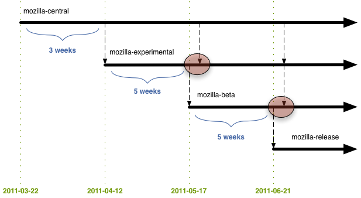

Mozilla Firefox: Development Specifics
Status: Draft
Overview
This document discusses specifics related to Mozilla's newly proposed Firefox development model.
Please note this is a draft document and subject to change.
Discussion should take place on dev-planning and changes should be submitted as pull requests on GitHub.
Main Repositories

-
mozilla-central
Just like the current repository
-
mozilla-experimental
Stabilize work done on mozilla-central for release
-
mozilla-beta
Fix any issues that come up during the beta validation of the mozilla-experimental stabilization
-
mozilla-release
Repository for code to generate officially released Firefox binaries
Why not copy to releases/mozilla-X.Y? We currently do so to have a repo to use for .x releases. Because this new model doesn't have .x releases (only chemspill/rapid response updates) we don't need to copy to the releases directory and deal with the version naming. That being said, we could still do so if we wanted to but there doesn't appear to be much benefit/point. Please give feedback.
The main goal of this repository naming scheme is consistency. The repos have their default channel as part of their name. This should make it so there is no confusion which channel a build from a particular repo is pushed to. Additionally, automated tools can key off the names and infer channels without a lookup table.
The general naming scheme should work equally well for other products if they decide to follow the same development/channel/repo model. Also note if in the future Firefox releases split from platform releases the naming scheme does not need to change...we would merely create firefox-* repositories.
mozilla-central was chosen as the main development repository name due to familiarity, to prevent developers from having to alter their local repos, and to prevent needless changes to tools.
Please note product marketing isn't happy with the channel names, which may or may not affect repo names. The UX team is also looking into other, potentially better names.
Development vs Release
The repositories can generally be grouped into two overall processes: development and release. Project repositories and mozilla-central are part of the development process. The downstream repositories are part of the release process.
This document mainly covers the release process. Details about project pages, feature tracking, and bug management are out of scope for this proposal and will be discussed soon.

Update Channels
As stated above, the update channel is embedded in each repository name. Thus, for each of the above repositories in the form [product]-[channel] we have the following channels:

-
central
Current Users 50,000 Anticipated Users 100,000 Type of User Mozilla developers and power users willing to risk massive instability to see and test the latest fixes Anticipated Update Rate nightly Branded Not branded as Firefox Our current nightly audience.
Why not "nightly" for the channel name (as it is now)? Because there will be be nightly updates on the other channels and the nomenclature would get confusing quickly. Why not mozilla-central or trunk? Those refer to repos, not channels.
-
experimental
Current Users 0 Anticipated Users 1 million Type of User Power users willing risk instability to see and test the latest fixes. There are higher stability expectations versus central Anticipated Update Rate nightly Branded Not branded as Firefox This is a new channel. We will discuss populating this channel artificially if need be. The hope is people will self-select into this channel due to the balance of new features and stability.
-
beta
Current Users 2.78 million Anticipated Users 10 million Type of User Current beta channel users Anticipated Update Rate weekly (highly dependent on found issues) Branded Branded as Firefox This is the current beta channel / audience.
-
release
Current Users 100+ million Anticipated Users 100+ million Type of User Normal Firefox users Anticipated Update Rate 6-12 weeks Branded Branded as Firefox This is the current release channel. When a build is offered on this channel it means a new version of Firefox has been officially released.
Please note product marketing isn't happy with the channel names. Because the names will be publicly communicated they are looking into other, potentially better names.
What Happens Where?
-
mozilla-central
- General development
- Project repository merges
- en-US changes
- Some localization
-
mozilla-experimental
- Preffing off and backing out fixes/features which the central channel exposes as problematic with a wider audience.
- Remaining localizations
- Landing spot fixes to get the product in a shipping state
- Merge from mozilla-shadow (see below) and fixes/backouts for any resulting issues
- Preffing off and backing out fixes/features which were deemed ready but testing determined they in fact were not
-
mozilla-beta
- Fixes for newly-found issues which would prevent a final release
- In extreme cases backouts / pref offs
-
mozilla-release
- Nothing is landed. The repo is just for reference and available for cloning if a rapid response release is needed
Versioning
Because updates are (intended) to be silent and automatic we can generally assume a user on a given channel is on the latest available build. This assumption simplifies things greatly.
Firefox Versioning
There are currently two version proposals for Firefox. Please give feedback or an alternate approach.
Standard

During Firefox 5 development builds on mozilla-central identify as 5.0pre. When the time comes for the mozilla-central → mozilla-experimental merge mozilla-central becomes 6.0pre and mozilla-experimental keeps 5.0pre. When the time comes for the mozilla-experimental → mozilla-beta merge mozilla-central becomes 7.0pre, mozilla-experimental becomes 6.0pre, and mozilla-beta becomes 5.0.
Chrome-style

The version number is in the form "[major firefox version].[mozilla-beta build #].[mozilla-experimental build #].[mozilla-central build #]"
During Firefox 5 development mozilla-central would start out at 5.0.0.0. For every nightly build we increment the mozilla-central position by one. When the time comes for the mozilla-central → mozilla-experimental merge mozilla-central becomes 6.0.0.0 while mozilla-experimental takes the previous mozilla-central number. For every build on mozilla-experimental we increment the mozilla-experimental slot. The process continues until a build is on mozilla-release with a frozen version number.
For this versioning scheme to be successful we need a way to query the latest build from a given repo and Release Engineering needs a way to increment build numbers sanely.
Gecko versioning
Gecko versioning will tie into Firefox versioning regardless of the Firefox version scheme above. For Firefox 5, the gecko version will be 5.0, for Firefox 6, 6.0, etc.
Please note that binary extensions will already need to be recompiled for Firefox 5.
Project Repositories
Project repositories are cheap and developers should not hesitate to ask for one.
Project repositories should be grouped by team or area in subdirectories under hg.mozilla.org/projects. In this scheme Tracemonkey can be found at hg.mozilla.org/projects/js/tracemonkey. Additional repos for the js team would be created in hg.mozilla.org/projects/js as well. This should keep hg.mozilla.org organized and enable automated tools to enumerate the available project repositories easily.
Please note the above naming convention is different from what was used in the past. Existing project repositories may need to be moved around to fit in with the new scheme.
Project repositories automatically get an update channel when nightly builds are enabled. The naming convention for the channel is the path from root repo, with slashes converted to dashes. For the Tracemonkey example above, builds would be generated and posted to projects-js-tracemonkey.
Developers may also wish to check out one of the already existing disposable project repositories.
These naming conventions for project repositories have not been widely discussed yet. Please give feedback.
The Shadow Repository Having a restricted shadow repository is new to Mozilla. We are trying to balance the fact we are open source with the need to secure our users by not publishing information about security vulnerabilities before our users are protected.
Most developers and users need not worry or care about mozilla-shadow, so feel free to ignore it (most of the graphics omit it for clarity).
mozilla-shadow
- Shadows mozilla-central and takes additional security fixes
- Merges into mozilla-experimental at the mozilla-central → mozilla-experimental merge point
shadow channel
| Current Users | 0 |
|---|---|
| Anticipated Users | ~10 |
| Type of User | The security team and QA |
| Anticipated Update Rate | nightly |
| Branded | Not branded as Firefox |
Localization
Localization work will be split into similar repositories:
- l10n-central
- l10n-experimental
- l10n-beta
- l10n-release
Please be aware there is discussion about the l10n repo names and their content. Axel expressed the desire to have the current l10n-central repo track mozilla-experimental and to create a new repo to track mozilla-central. Christian feels the naming and content should be consistent as it is easy to get confused about what content is where and which mozilla-* repository l10n-* is shadowing. Axel is the ultimate decision-maker with respect to l10n repositories.
There will be 8 or so locales that track mozilla-central, localizing alongside en-US development. Other locales can track mozilla-central if they would like to as well but they won't be asked to explicitly.
mozilla-central will be string frozen for en-US at the mozilla-central → mozilla-experimental merge point. No en-US strings will be allowed on mozilla-experimental. The mozilla-central → mozilla-experimental merge date will happen on schedule so the string freeze should not come as a surprise.
For locales that don't track mozilla-central, their work is done in l10n-experimental, which tracks mozilla-experimental. This means most locales have 6 weeks to complete their localizations.
Schedule of Important Milestones
In general, each stage of the process (and activity pertaining to a particular version) lasts for 6 weeks.

Firefox 5
Firefox 5 will be slightly different from future releases due to the development overlap (or lack thereof) with Firefox 4:

Rather than 6 weeks for mozilla-central, mozilla-experimental, and mozilla-beta we instead have 3 weeks for development on mozilla-central, 5 weeks to converge and stabilize on mozilla-experimental, and 5 weeks to validate on mozilla-beta.
Firefox 6
Firefox 6 will start the normal schedule where every step in the cycle takes 6 weeks. Firefox 6's development cycle starts when Firefox 5 is cloned from mozilla-central to mozilla-experimental (on 2011-04-12).
Please note there will be a week-long period where updates are not generated on both the experimental and beta channels (out of the mozilla-experimental and mozilla-beta repos). This is due to the condensed Firefox 5 schedule:

Again, because the schedule is fixed one can write a simple program to print out important release milestones:
Development on mozilla-central for Firefox 6 on 2011-04-12
Development on mozilla-central for Firefox 6 ends on 2011-05-24
Pull from mozilla-central to mozilla-experimental for Firefox 6 on 2011-05-24
Development on mozilla-experimental for Firefox 6 ends on 2011-07-05
Pull from mozilla-experimental to mozilla-beta for Firefox 6 on 2011-07-05
Development on mozilla-beta for Firefox 6 ends on 2011-08-16
Pull from mozilla-beta to mozilla-release for Firefox 6 on 2011-08-16
Please do note that chemspills / rapid response updates are not reflected in these schedules and will be dealt with on an as-needed basis.
Cloning Mechanics
The inital thought was to blow away what is in the downstream repo with upstream repo content at the clone point, but there were concerns with losing history and the impact on l10n.
Developers and RelEng have also expressed concerns with relanding backouts and pref-offs every time we merge repos.
Eventually the cloning / merging should be automated but for Firefox 5 it will likely be manual. Chiristian is tasked with organizing or actually doing the merges during Firefox 5 development.
More discussion is needed for the merging mechanics.
Rapid Release / Chemspill Updates
We are still in the information gathering phase and will have this section filled out in the next couple of days.
General Observations
Deferring work
No work is deferred from upstream repos to downstream repos. If your feature / change isn't finished on mozilla-central, mozilla-experimental is not the place to fix it up. If there is outstanding work on mozilla-experimental do not plan to fix it in mozilla-beta. The clone / pull dates are published far in advance so there should be ample time to plan. If it's not ready it should be backed out or preffed off. There will be another release in 6-12 weeks for the fix to try to make it in again.
Time-based cloning
Cloning between repos will happen on schedule. Again, consistency is key. Groups will be able to plan and won't need to be intimately involved with the release process to know where fixes are and where fixes should be landed.
The merge between release repos should be automatic
When the time comes to merge upstream release repositories with downstream repositories we are essentially replacing the downstream repository with a copy of the upstream. Because the merge/clone should never fail and it happens on a set schedule it will likely be automated.
Please note in the section above there is still discussion on what can be automated and the proper version control mechanics.
Preffing off / backing out happens after the clone
When cloning from mozilla-central to mozilla-experimental the backouts and pref offs take place on the mozilla-experimental repo. This allows mozilla-central to use the complete allotted time for development and utilizes mozilla-experimental's time for convergence.